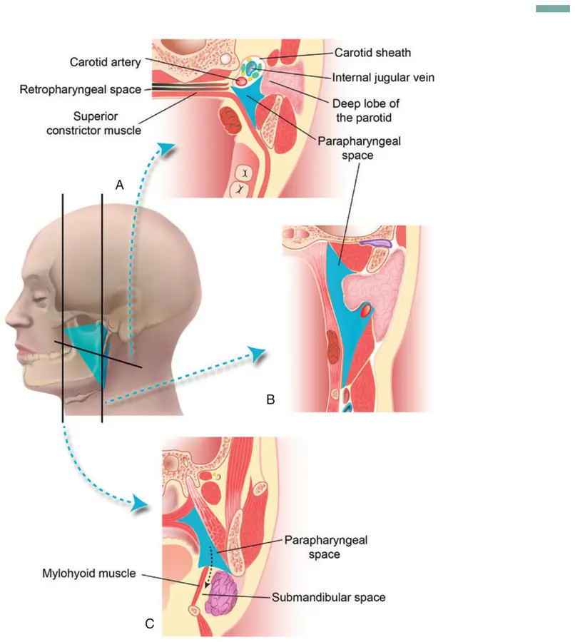
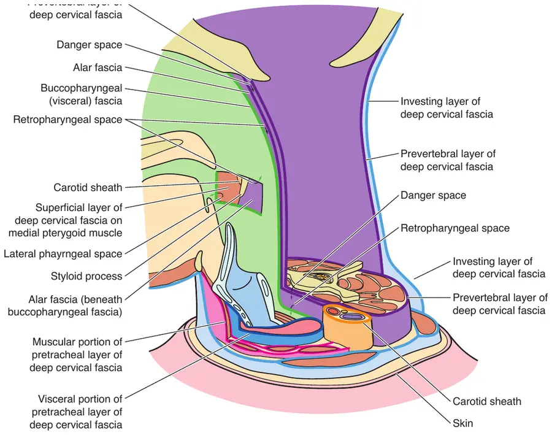

نسخه استخراجشده؛ ترجمه یا تأیید علمی انجام نشده است. وضعیت: captured
فضای لترال فارنژیال — بسیار خطرناک، هم بهخاطر محتویاتش و هم بهخاطر گسترش سریع به پایین: منشأ عفونت مولرهای سوم پایین و تونسیلیت است، محتویاتش شریان کاروتید، ورید ژوگولار داخلی و عصب واگ است (با خطر ترومبوز ورید ژوگولار داخلی و خوردگی دیوارهی کاروتید)، فضاهای مجاورش پتریگومندیبولار و رتروفارنژیال، و دسترسی جراحیاش خارجدهانی.

فضای پریتونسیلار — مرزهایش مخاط اوروفارنکس و عضلهی فارنژیال فوقانی، منشأش تونسیلیت، محتوایش تونسیل پالاتین، فضای مجاورش لترال فارنژیال، و دسترسی داخلدهانی یا خارجدهانی.
فضای رتروفارنژیال — نکتهی کلیدیاش این است که هیچ مسیر مستقیمی از دندان به آن وجود ندارد؛ محتوایش بافت همبند آرئولار شل و گرههای لنفاوی است و از راه فضای لترال فارنژیال درگیر میشود. دسترسی جراحی: خارجدهانی.
فضای پرهتراکئال — از گسترش از فضای رتروفارنژیال درگیر میشود، محتوایش عضلات استرنوهایوئید و استرنوتیروئید، و فضاهای مجاورش رتروفارنژیال و مدیاستن.
و همینجا زنجیره را ببین: دندان ← لترال فارنژیال ← رتروفارنژیال ← پرهتراکئال ← مدیاستن.
«فضای خطر» (danger space) نامش را بیجهت نگرفته. تعریفش این است: یک فضای بالقوه میان فاشیای آلار و پرهورتبرال که از قاعدهی جمجمه تا دیافراگم امتداد دارد، منشأ درگیریاش فارنژیال است، محتوایش بافت همبند آرئولار، و فضای مجاورش مدیاستن خلفی. دسترسی: خارجدهانی.

و مدیاستن: مرزش دندهی اول است، از فضای خطر درگیر میشود، و محتویاتش عروق بزرگ است. یعنی یک عفونت دندانی میتواند از راهی کاملاً آناتومیک به قفسهی سینه برسد.
و مسیر دوم، به سمت بالا — ترومبوز سینوس کاورنو: شبکهی وریدی میتواند مستقیماً به سینوس کاورنو برود، چون این وریدها بدون دریچهاند — و ترومبوز سینوس کاورنو حتی با بهترین درمان داخلی و جراحی هم میتواند کشنده باشد.
پس دو مسیر مرگآور از یک عفونت دندانی وجود دارد: یکی رو به پایین به مدیاستن، و یکی رو به بالا به سینوس کاورنو. و همین دو مسیر است که تفاوت میان «یک آبسهی ساده» و «یک اورژانس واقعی» را میسازد.
و سایر عفونتهای اختصاصی که باید بشناسی: فاشئیت نکروزان، استئومیلیت (چرکی حاد، چرکی مزمن، اسکلروزان مزمن، و استئومیلیت با پریوستیت پرولیفراتیو یا استئومیلیت گاره، که بیشتر در کودکان دیده میشود و زیر پریوست استخوان تازهی لایهلایه میسازد)، اکتینومایکوز (باکتریایی، هرچند نامش قارچ را به ذهن میآورد)، و کاندیدیازیس (قارچی).